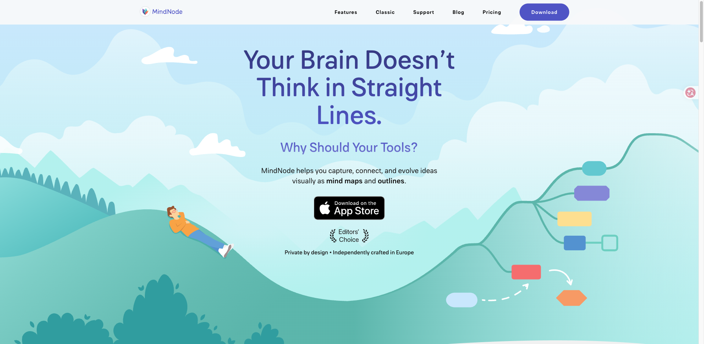

一张纸、一支笔的思维导图，画布上只有想法本身。
复刻一页「读书笔记」
MindNode 的视觉语言：一种颜色、一种字体、没有填充。分支是同一支笔画的细线，只靠粗细分出层级 —— 一级略实，二级更细更淡；节点只有文字，没有边框没有底色；剩下全是留白。层级全靠字号和灰度拉开（28 → 18 → 14px）。

一款 Apple 平台独占的思维导图与大纲应用。同一个想法可以在「导图视图」和「大纲视图」之间来回切：先发散画图，再收成一条条可执行的列表。强调快速捕捉（Capture freely），交互贴合 Mac / iPad / iPhone 的手势与快捷键。
谁在用：习惯 Apple 生态、想找一款不打扰思路的工具的写作者、学生和设计师。